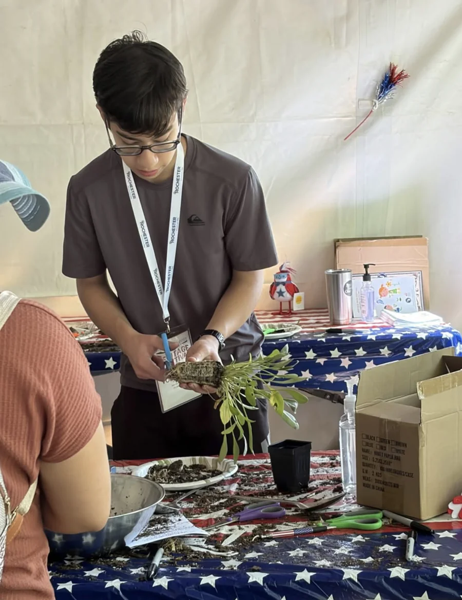
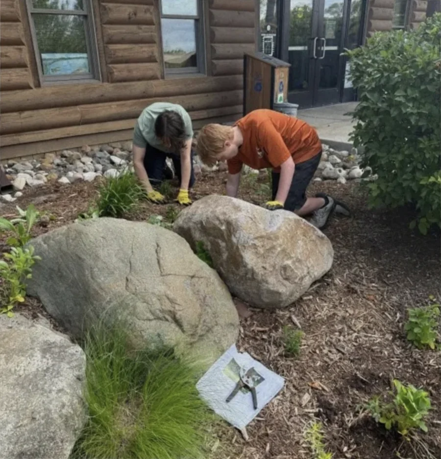
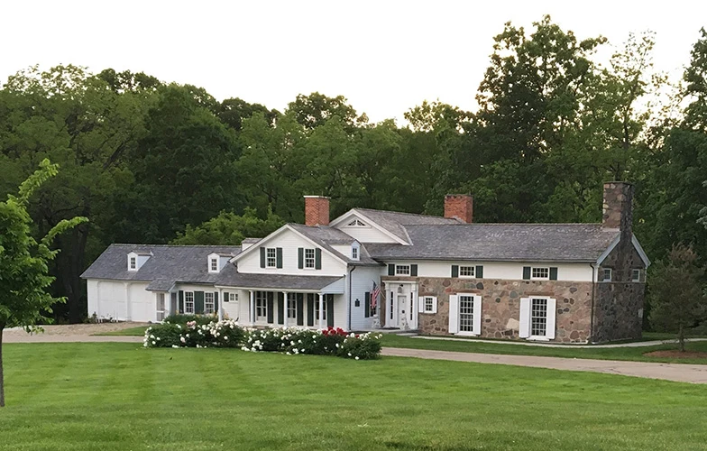

2024 / Medical
Volunteering with Absolute Home Health and Hospice
OSI volunteers contributed 300+ hours with Absolute Home Health and Hospice, one of our collaborators.
 Oakland Service Initiative
Join OSI
Oakland Service Initiative
Join OSI
Events / Oakland Service Initiative
Explore documented moments from our service journey, from community festivals to food assistance and medical volunteering.
2024 / Medical
OSI volunteers contributed 300+ hours with Absolute Home Health and Hospice, one of our collaborators.

May 30–31, 2026 / Community
The Rochester Heritage Festival, with 7,000 people, was our largest event. OSI volunteers welcomed visitors to planting activities and hands-on learning at our booth.

June 19–20, 2026 / Environment
Volunteers planted 500 plants at Burgess-Shadbush Nature Center, putting care for our local environment into action.

June 24, 2026 / Community
OSI takes part in Rochester Hills’ community celebration, continuing our local event service.

Date not recorded / Community
OSI volunteered at the Rochester Hills Museum at Van Hoosen Farm as part of our community event service.
Date not recorded / Food
OSI participated in Food Service Day with International Academy as part of our food-related community service.